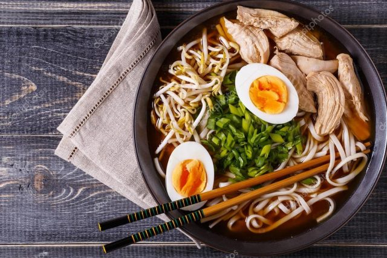
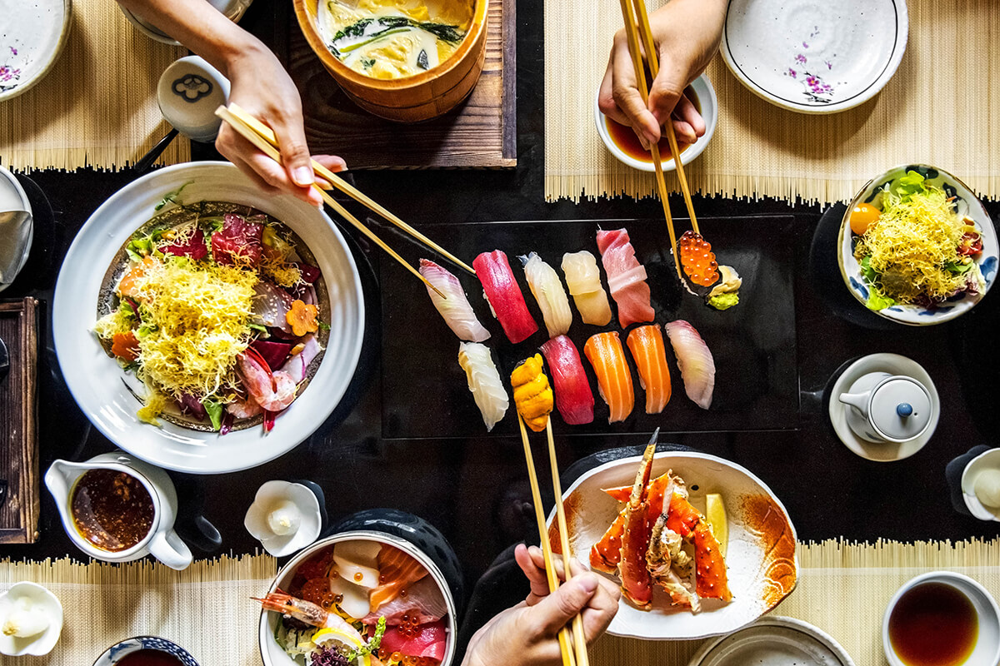
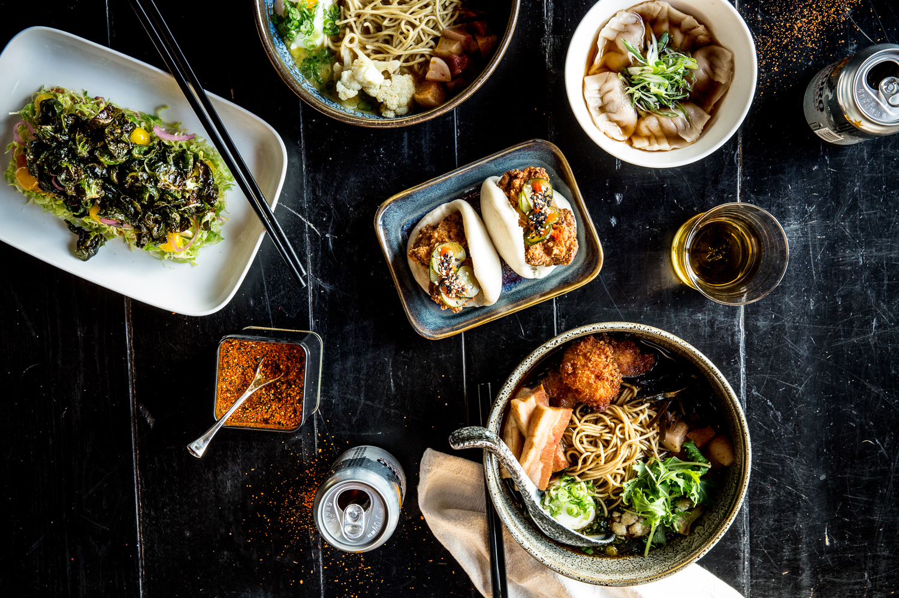

Гострі страви з великою кількістю прянощів, широке використання рису та бобових, різноманітні солодощі та безліч фруктів – ось чим відрізняється азіатська кухня.
Рецепти азіатської кухні дуже різноманітні, що не дивно, адже вони представлені корейською, китайською, японською, тайською та іншими кухнями.
Види:
Корейська кухня
Корейська кухня — переважно гостра, неможлива без величезної кількості перцю. Корейські страви часто червоні, бо їх щедро приправили гострим перцем...

Японська кухня
Японська кухня – характерними рисами є сезонність харчування, свіжість продуктів, слабка обробка приправами, збереження первісного вигляду і смаку харчів, цінування зовнішнього вигляду страви і посуду...

Китайська кухня
Китайська кухня — поділяється на кілька основних груп, кожна з яких має свої особливості: сичуанську, шаньдунську, ґуандунську, шанхайську тощо...

Тайська кухня
Тайська кухня асоціюється насамперед зі смаком бананів, цитрусових, ананасів, кокосового молока, свіжого коріандру, лимоннику, часнику і стручкового перцю — чилі...